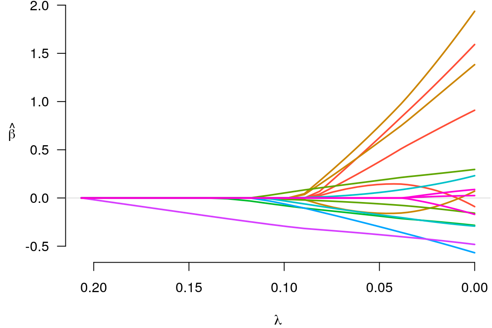
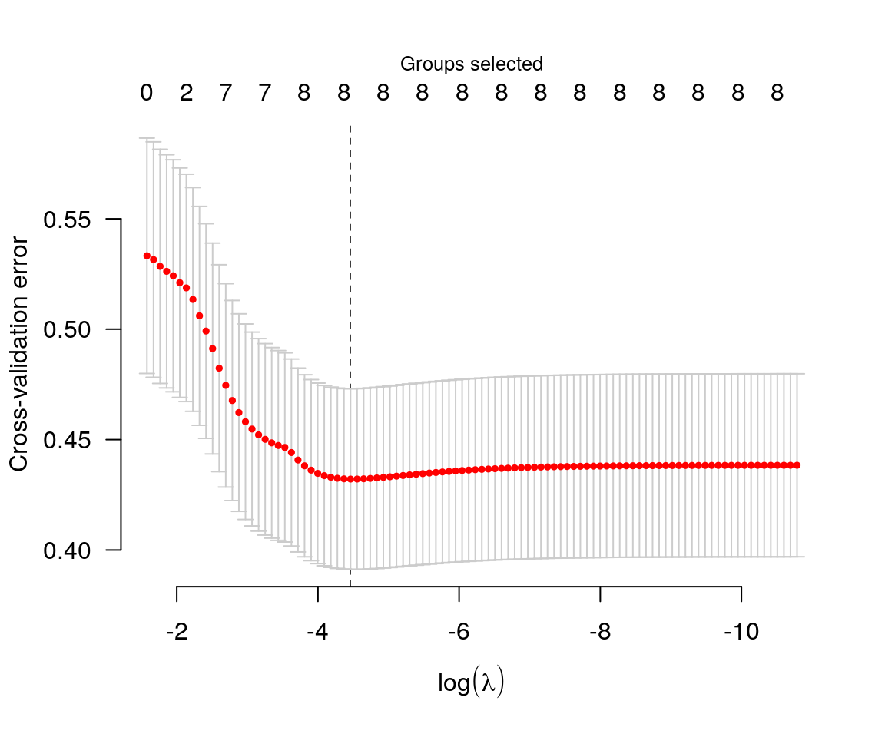

grpreg is an R package for fitting the regularization path of linear regression, GLM, and Cox regression models with grouped penalties. This includes group selection methods such as group lasso, group MCP, and group SCAD as well as bi-level selection methods such as the group exponential lasso, the composite MCP, and the group bridge. Utilities for carrying out cross-validation as well as post-fitting visualization, summarization, and prediction are also provided.
This site focuses on illustrating the usage and syntax of grpreg. For more on the algorithms used by grpreg, see the original articles:
For more information on specific penalties, including references describing the methods implemented by grpreg in greater detail, see http://pbreheny.github.io/grpreg/articles/web/penalties.html.
Brief introduction
In regression modeling, variables are often grouped. For example, suppose we took the design matrix from the MASS::birthwt data set and expanded its original variables by including multiple indicator functions for categorical variables such as race and basis expansions using polynomials or splines for the continuous variables:
head(X)
# age1 age2 age3 lwt1 lwt2
# [1,] -0.05833434 0.011046300 0.029561818 0.12446282 -0.02133871
# [2,] 0.13436561 0.055245529 -0.096907046 0.06006722 -0.06922831
# [3,] -0.04457006 -0.009415469 0.045088774 -0.05918388 0.03746349
# [4,] -0.03080577 -0.026243567 0.052489640 -0.05202881 0.02390664
# [5,] -0.07209862 0.035141739 0.004821882 -0.05441384 0.02832410
# [6,] -0.03080577 -0.026243567 0.052489640 -0.01386846 -0.03296942
# lwt3 white black smoke ptl1 ptl2m ht ui ftv1 ftv2 ftv3m
# [1,] -0.130731102 0 1 0 0 0 0 1 0 0 0
# [2,] -0.033348413 0 0 0 0 0 0 0 0 0 1
# [3,] 0.004618178 1 0 1 0 0 0 0 1 0 0
# [4,] 0.019034579 1 0 1 0 0 0 1 0 1 0
# [5,] 0.014571538 1 0 1 0 0 0 1 0 0 0
# [6,] 0.049559472 0 0 0 0 0 0 0 0 0 0
group
# [1] age age age lwt lwt lwt race race smoke ptl ptl
# [12] ht ui ftv ftv ftv
# Levels: age lwt race smoke ptl ht ui ftvWe can fit a penalized regression model to this data with:
By default, grpreg fits a linear regression model with a group lasso penalty. For more detail on other types of models available, see here. For more detail on other types of penalties available, see here.
Fitting a penalized regression model produces a path of coefficients, which we can plot with

Notice that when a group enters the model (e.g., the green group), all of its coefficients become nonzero; this is what happens with group lasso models. To see what the coefficients are, we could use the coef function:
coef(fit, lambda=0.05)
# (Intercept) age1 age2 age3 lwt1 lwt2
# 3.02892181 0.14045229 0.62608119 0.37683684 0.74715315 -0.15825582
# lwt3 white black smoke ptl1 ptl2m
# 0.58290856 0.18344777 -0.06107624 -0.18778377 -0.17422515 0.05710668
# ht ui ftv1 ftv2 ftv3m
# -0.29776948 -0.38050822 0.00000000 0.00000000 0.00000000Note that the number of physician’s visits (ftv) is not included in the model at \(\lambda=0.05\).
Typically, one would carry out cross-validation for the purposes of carrying out inference on the predictive accuracy of the model at various values of \(\lambda\).
 The coefficients corresponding to the value of \(\lambda\) that minimizes the cross-validation error can be obtained via coef:
coef(cvfit)
# (Intercept) age1 age2 age3 lwt1 lwt2
# 3.04266435 0.01796227 1.35719728 0.79450972 1.62763897 -0.02972551
# lwt3 white black smoke ptl1 ptl2m
# 1.19306399 0.26989807 -0.13012492 -0.26049856 -0.27044766 0.17744150
# ht ui ftv1 ftv2 ftv3m
# -0.50214565 -0.45515119 0.06555406 0.02083302 -0.10804918Predicted values can be obtained via predict, which has a number of options:
predict(cvfit, X=head(X)) # Predictions for new observations
# [1] 2.542064 2.995053 3.047928 2.560593 2.575120 3.085732
predict(fit, type="ngroups", lambda=0.1) # Number of nonzero groups
# [1] 5
predict(fit, type="groups", lambda=0.1) # Identity of nonzero groups
# [1] "race" "smoke" "ptl" "ht" "ui"
predict(fit, type="nvars", lambda=0.1) # Number of nonzero coefficients
# [1] 7
predict(fit, type="vars", lambda=0.1) # Identity of nonzero coefficients
# white black smoke ptl1 ptl2m ht ui
# 7 8 9 10 11 12 13Note that the original fit (to the full data set) is returned as cvfit$fit; it is not necessary to call both grpreg and cv.grpreg to analyze a data set. Several other penalties are available, as are methods for logistic regression and Cox proportional hazards regression.